下面是我们家的家庭成员

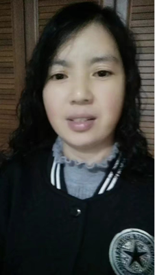妈妈
在我印象中也是一直操劳着家，父亲管外，母亲管内，但她几乎不管我和姐姐的教育之事，都是爸爸在管，
就比如说从小到大的学习，她从来都不管我，因为她只读过小学，不识字。她家里老一辈重男轻女，所以说小学都没读完就开始照顾我舅舅了，这也是在学习上不管我的原因吧，她也是为了我们的家操劳了大半辈
子，初、高中我寄宿于学校，也只有周末能回家，她在上班，所以说家里只有我一个人，自己买东西、煮饭，家庭环境让我在生活上变得很是独立。她平时没事做的话喜欢刷刷视频，看看电视，她很喜欢小孩子，只要姐姐带着孩子两个
孩子回家，她会和她的两个外孙玩得很开心，俩孩子也非常喜欢和她一起玩。我的性格随妈妈，她是一个比较温柔的人，说话一点也没有什么气场压迫
，比较随和，在邻里内外人缘很好。
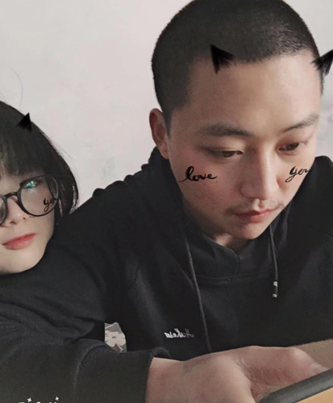
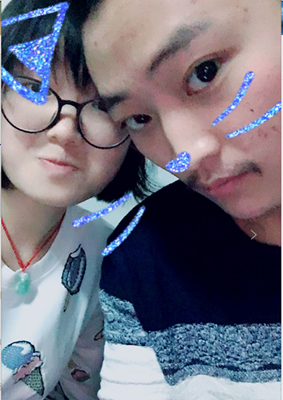
姐姐 比我大六岁，她对我很好，也照顾家。她高中没读完就辍学了，然后有缘分的遇见了姐哥，最终她们俩也是走到了最后。
她和姐哥结婚四五年了，很恩爱，姐姐有两个小孩，男孩很帅，朝着他舅舅我长，
女孩朝着我姐长的，姐姐对她们俩姐弟很好。每当逢年过节的时候我姐和姐哥都会带着她们家的俩可爱回娘家，那时家里的氛围顿时就热闹了，俩姐弟打跳，我妈和姐煮饭，我和姐哥、爸一起聊家常看电视。
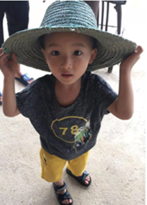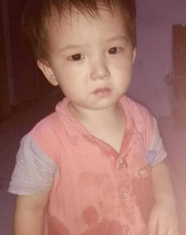这是 我的小外外，田俊熙，今年五岁，已经要上中班了，性格和我小时候很相像，
都是话比较少，有点内向，他的性格和他姐姐性格恰恰相反
他姐姐大大咧咧的，跟很多小男孩一样，喜欢看奥特曼，熊出没这种比较有激情的电视，有时会学奥特曼打怪兽的动作打我们。老舅希望你们俩健健康康成长，田二娃。
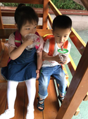
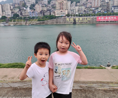
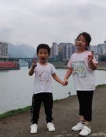
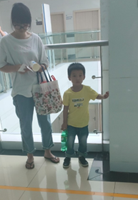
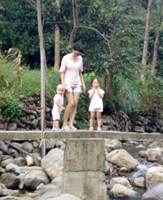
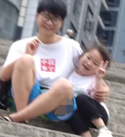
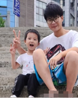